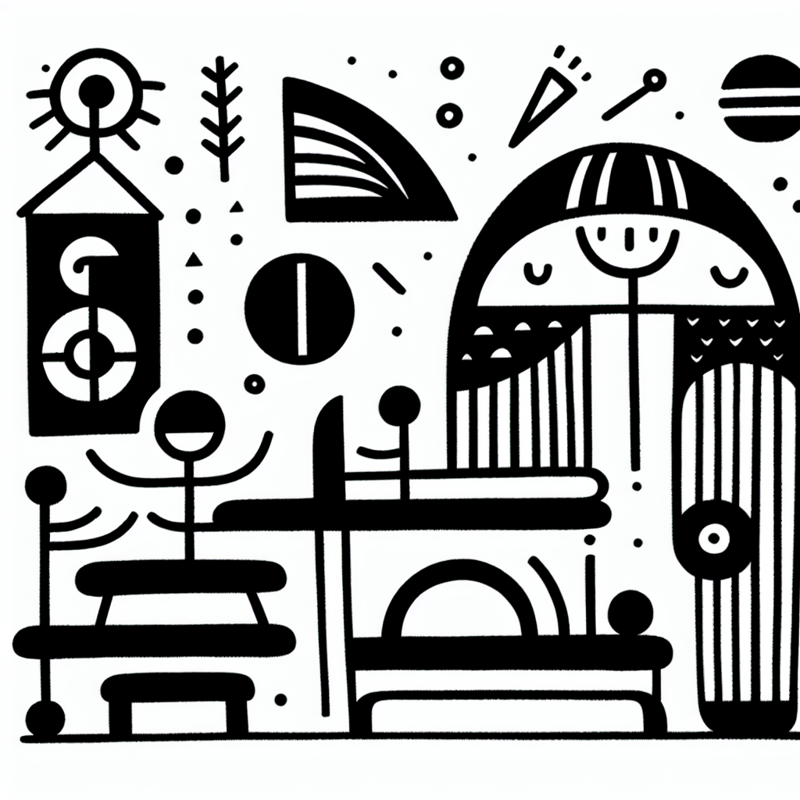

Souplesse et Lagree : un duo gagnant
Souplesse et Lagree : un duo gagnant
Quête de souplesse et renforcement musculaire : une alliance souvent sous-estimée mais ô combien essentielle pour une vie active et épanouissante. Sur la côte basque, symbolisée par son style de vie 'Healthy & Surf', DOZ, ce lieu hybride d’Anglet, allie le meilleur des deux mondes : le rythme des sessions surf et la zenitude d'un espresso de spécialité au cœur d'un espace harmonieux. Aujourd'hui, explorons ensemble pourquoi intégrer le Lagree à votre routine quotidienne pourrait bien être votre passeport vers une souplesse inégalée.
Pourquoi la souplesse est cruciale
La souplesse est souvent réduite à la capacité de toucher ses orteils sans plier les genoux, mais elle englobe bien plus que cela. Une bonne souplesse signifie une meilleure amplitude de mouvement qui peut prévenir les blessures, augmenter la performance physique, mais aussi compléter votre bien-être global.
- Prévention des blessures : Des muscles plus souples permettent d’encaisser des mouvements brusques, réduisant ainsi les risques d’entorses.
- Performance améliorée : Que vous soyez sur une planche de surf ou un tapis de yoga, une bonne souplesse est synonyme d’efficience et de fluidité des mouvements.
- Sérénité et détente : La souplesse ne touche pas que le physique. Elle impacte aussi l’esprit, favorisant la relaxation et réduisant le stress.
Le Lagree : plus qu'un simple entraînement
Le Studio Lagree chez DOZ n'est pas un centre de fitness traditionnel. Utilisant les machines MegaPro, il propose un entraînement intense sans impact, idéal pour ceux cherchant à allier souplesse et force. Inspiré par le Pilates, le Lagree renforce et allonge les muscles tandis qu’il améliore votre flexibilité.
Contrairement aux entraînements à haute intensité classiques, le Lagree minimise l'usure sur les articulations. Ici, efficacité rime avec douceur.
- Méthode adaptable : Chaque session s’ajuste aux besoins individuels. Que vous soyez débutant ou adepte de longue date, chaque position vise à défier vos limites tout en respectant votre corps.
- Engagement global : Chaque mouvement sollicite différents groupes musculaires, favorisant un équilibre total et, bien sûr, une souplesse accrue.
Le duo de choc : Lagree et souplesse
Associer la méthode Lagree à un objectif de souplesse est une stratégie gagnante. La clé réside dans la complémentarité des mouvements proposés par cette méthode qui intègre à la fois extension et contraction.
- Mouvements lents et contrôlés : Ils permettent une meilleure conscience corporelle et encouragent un étirement doux des muscles.
- Postures stables : Elles fournissent un équilibre parfait pour un renforcement profond et sans impact.
- Transitions fluides : Elles augmentent progressivement l'amplitude de mouvement pour une souplesse accrue.
La philosophie DOZ : 'Instant Brut'
Chez DOZ, nous croyons en un style de vie sans artifice. À travers notre design minimaliste et nos produits de qualité, nous prônons l’authenticité. Que vous sirotiez un café soigneusement torréfié ou que vous participiez à une session Lagree, l’essence de notre philosophie est de vivre pleinement chaque instant.
Allier le Lagree à votre quête de souplesse, c'est plus qu'un choix de fitness, c’est un choix de vie. Ici, chaque séance est un pas de plus vers un bien-être total, tout en douceur mais avec intensité.
Un appel à l'action : votre premier pas vers la flexibilité
Vous aussi, vous souhaitez explorer les bienfaits d’une vie alliant souplesse et renforcement ? Rejoignez-nous chez DOZ à Anglet pour une session Lagree inédite. Réservez votre cours dès maintenant et plongez dans cet univers unique où le sport rencontre le réconfort d’un bon café. Tous ensemble, engageons-nous dans cette démarche 'Instant Brut'. À très bientôt sous le ciel basque, avec un sourire et une nouvelle souplesse!